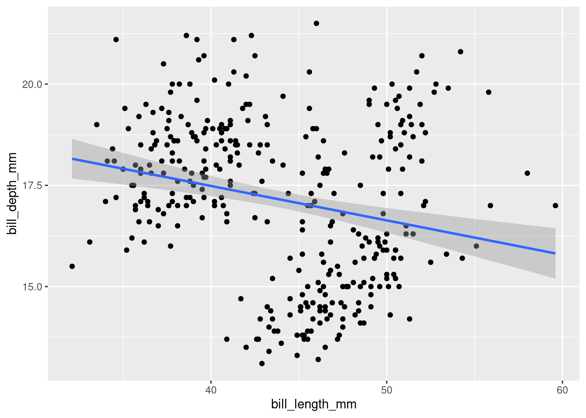
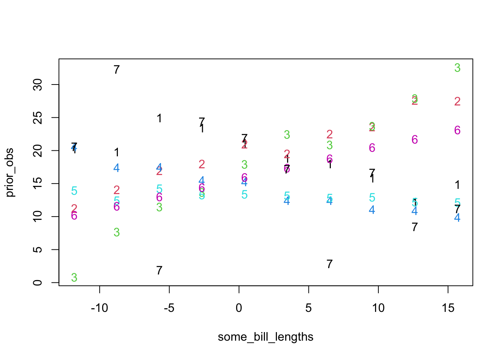
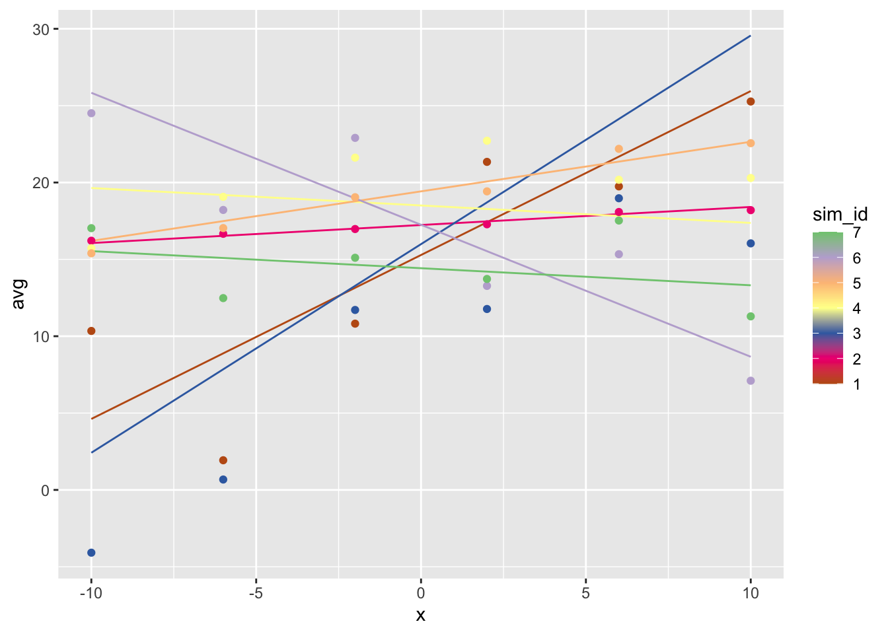
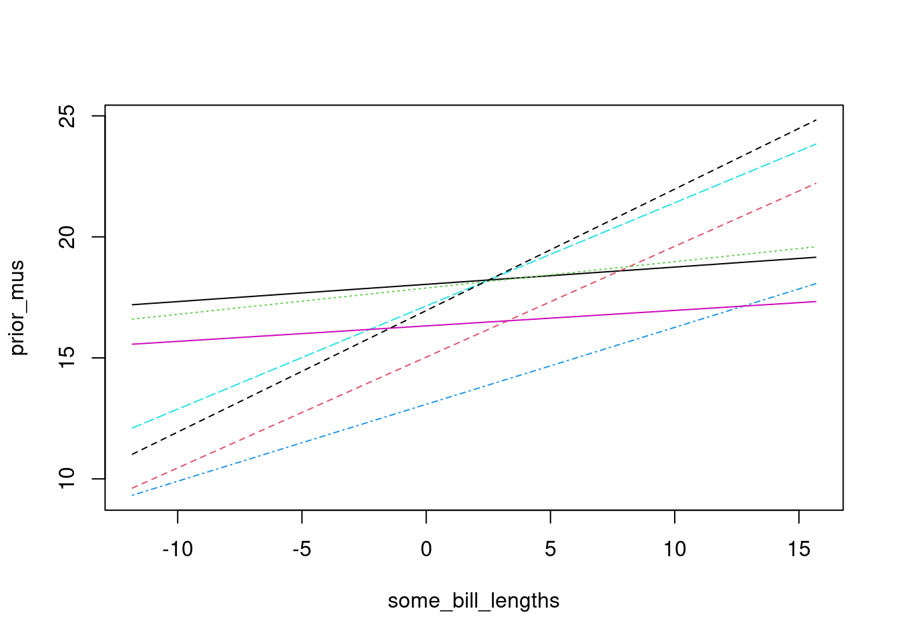
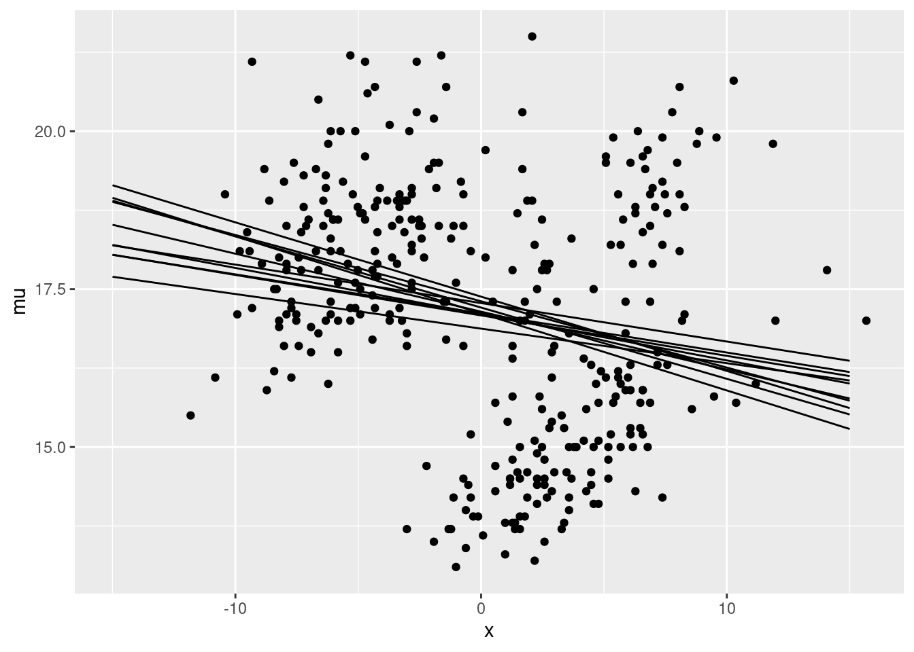
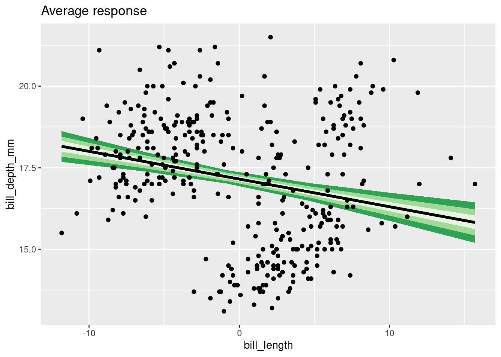
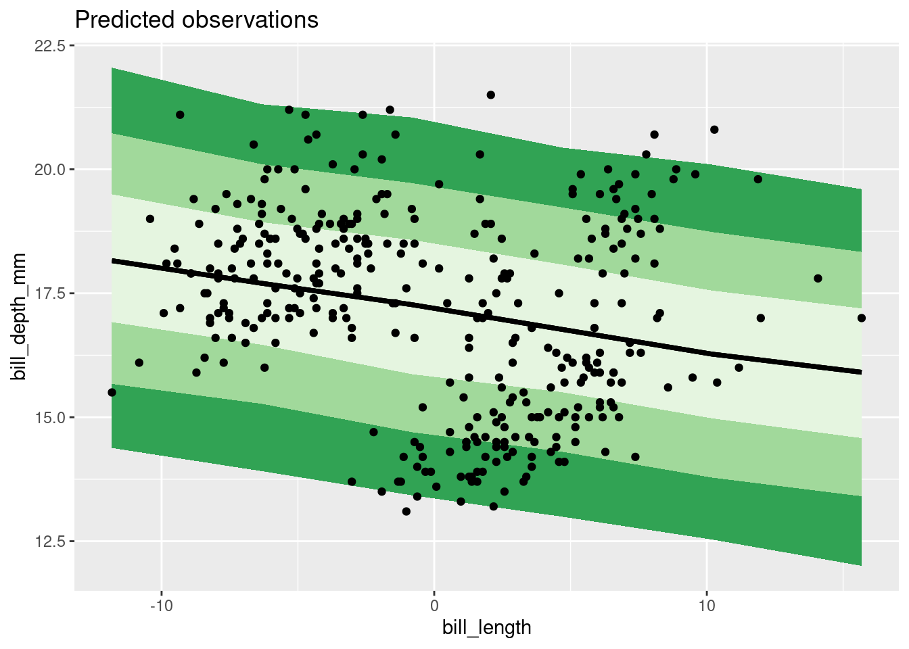

library(palmerpenguins)
library(tidyverse)
# library(cmdstanr)
suppressPackageStartupMessages(library(rstan))
rstan_options("auto_write" = TRUE)
options(mc.cores = parallel::detectCores())
library(tidybayes)Univariate regression
The shortest route to science is a straight line.
Load packages and data
Statistical models of Penguin bill morphology.
We’ll be studying the relationship between two numbers about penguin bills. Specifically, we’ll ask “Are longer bills also deeper?”. This question might not be the most interesting ecologically, but it is a great chance to practice some interesting stats.
Let’s begin with plotting the data:
penguins |>
ggplot(aes(x = bill_length_mm, y = bill_depth_mm)) +
geom_point() +
stat_smooth(method = "lm")`geom_smooth()` using formula = 'y ~ x'Warning: Removed 2 rows containing non-finite outside the scale range
(`stat_smooth()`).Warning: Removed 2 rows containing missing values or values outside the scale range
(`geom_point()`).
palmerpenguins dataset.Let’s write a simple statistical model for these data:
\[ \begin{align} \text{Bill depth}_i &\sim \text{Normal}(\mu_i, \sigma) \\ \mu_i &= \beta_0 + \beta_1\times\text{Bill length}_i \\ \beta_0 &\sim \text{Normal}(??) \\ \beta_1 &\sim \text{Normal}(??) \\ \sigma &\sim \text{Exponential}(??) \end{align} \]
What should our priors be? Before we can answer that, we have a more important question:
WHERE IS ZERO??
It has to be somewhere. Does it make sense? take control and choose for yourself.
If we fit a model like this without thinking about the location of zero, we get some pretty silly answers:
bill_line <- coef(lm(bill_depth_mm ~ bill_length_mm, data = penguins))When the value of bill length is 0, the average of the response is the intercept:
\[ \begin{align} \mu_i &= \beta_0 + \beta_1\times\text{Bill length}_i \\ \mu_i &= \beta_0 + \beta_1\times0 \\ \mu_i &= \beta_0 \\ \end{align} \]
But, if we take the data as we found it, we’re going to be talking about \(\beta_0\) as the depth of a penguin’s bill when the bill has 0 length! Either way it is the same line. However, from the point of view of setting priors and interpreting coefficients, it helps a lot to set a meaningful 0.
A very common choice is to subtract the average from your independent variable, so that it is equal to 0 at the average:
\[ \begin{align} \text{Bill depth}_i &\sim \text{Normal}(\mu_i, \sigma) \\ \mu_i &= \beta_0 + \beta_1\times(\text{Bill length}_i - \overline{\text{Bill length}})\\ \beta_0 &\sim \text{Normal}(??) \\ \beta_1 &\sim \text{Normal}(??) \end{align} \]
Now \(\beta_0\) means the average bill depth at the average bill length. It becomes easier to think about priors:
\[ \begin{align} \text{Bill depth}_i &\sim \text{Normal}(\mu_i, \sigma) \\ \mu_i &= \beta_0 + \beta_1\times(\text{Bill length}_i - \overline{\text{Bill length}})\\ \beta_0 &\sim \text{Normal}(17,2) \\ \beta_1 &\sim \text{Normal}(0,.5) \\ \sigma &\sim \text{Exponential}(0.5) \end{align} \]
Exercise
What continuous predictors have you used in your analysis? How would you find a biologically meaningful zero? Think about how you would center time, age, mass, fitness etc.
Prior predictive simulations
Armed with this model, it becomes much easier to think about prior predictions.
We’ll make a bunch of lines implied by the equation above. There’s two steps:
- Center the predictor
- Make up a vector that goes from the minimum to the maximum of the predictor. This is just for convenience!
bill_len_centered <- with(penguins,
bill_length_mm - mean(bill_length_mm,
na.rm = TRUE))
## make up a short vector
some_bill_lengths <- seq(
from = min(bill_len_centered, na.rm = TRUE),
to = max(bill_len_centered, na.rm = TRUE),
length.out = 10
)
Shortcuts to these common tasks
These tasks are so common that they are automated in helper functions.
For centering predictors, see the base R function ?scale (however, doing this by hand is often more convenient)
For creating a short vector over the range of a predictor, see modelr::seq_range. The R package modelr has many different functions to help with modelling.
To simulate, we’ll use some matrix algebra, as we saw in lecture:
slopes <- rnorm(7, 0, .5)
inters <- rnorm(7, 17, 2)
X <- cbind(1, some_bill_lengths)
B <- rbind(inters, slopes)
knitr::kable(head(X))| some_bill_lengths | |
|---|---|
| 1 | -11.8219298 |
| 1 | -8.7663743 |
| 1 | -5.7108187 |
| 1 | -2.6552632 |
| 1 | 0.4002924 |
| 1 | 3.4558480 |
knitr::kable(head(B))| inters | 18.6487972 | 20.1888241 | 14.5996818 | 18.6676823 | 16.7871466 | 16.8112014 | 16.2558397 |
| slopes | -0.5557941 | 0.3867236 | -0.8740392 | 0.9958234 | -0.0002412 | -0.0858761 | -0.4704916 |
prior_mus <- X %*% B
matplot(x = some_bill_lengths,
y = prior_mus, type = "l")
Exercise
Copy the code above. Increase the number of simulations. Which priors are too wide? Which are too narrow?
Simulating Observations
There are always at least TWO kinds of predictions we can be thinking about:
- Predicted averages. This is often called a “confidence” interval for a regression line.
- Predicted observations. This is often called a “prediction” interval.
We can use the full model to simulate observations!
slopes <- rnorm(7, 0, .5)
inters <- rnorm(7, 17, 2)
sigmas <- rexp(7, rate = 0.3)
X <- cbind(1, some_bill_lengths)
B <- rbind(inters, slopes)
prior_mus <- X %*% B
prior_obs <- matrix(0, nrow = nrow(prior_mus), ncol = ncol(prior_mus))
for (j in 1:ncol(prior_obs)) {
prior_obs[,j] <- rnorm(n = nrow(prior_mus),
mean = prior_mus[,j],
sd = sigmas[j])
}
matplot(x = some_bill_lengths,
y = prior_obs, type = "p")
Tidyverse style for those who indulge:
tibble(
sim_id = 1:7,
slopes = rnorm(7, 0, .5),
inters = rnorm(7, 17, 2),
sigmas = rexp(7, rate = 0.2)
) |>
mutate(x = list(seq(from = -10, to = 10, length.out = 6))) |>
rowwise() |>
mutate(avg = list(x * slopes + inters),
obs = list(rnorm(length(avg), mean = avg, sd = sigmas)),
sim_id = as.factor(sim_id)) |>
unnest(cols = c("x", "avg", "obs")) |>
ggplot(aes(x= x, y = avg, group = sim_id, fill = sim_id)) +
geom_line(aes(colour = sim_id)) +
geom_point(aes(y = obs, fill = sim_id), pch = 21, size = 3) +
scale_fill_brewer(type = "qual") +
scale_colour_brewer(type = "qual") +
facet_wrap(~sim_id)
EXERCISE
Pick one of the two simulations above and modify it. Here are some suggested modifications:
- Experiment with priors that are “too narrow” or “too wide”.
- Try a different distribution than the one used
- Instead of bill size, imagine that we are applying this model to YOUR data. What would you change?
Linear regression in Stan
Now we write a Stan program for this model. We’ll begin with a simple model that has no posterior predictions:
normal_regression_no_prediction <- stan_model(
file = here::here("topics/02_regression/normal_regression_no_prediction.stan"),
model_name = "normal_regression_no_prediction")
normal_regression_no_predictionS4 class stanmodel 'normal_regression_no_prediction' coded as follows:
data {
int<lower=0> N;
vector[N] bill_len;
vector[N] bill_dep;
}
parameters {
real intercept;
real slope;
real<lower=0> sigma;
}
model {
bill_dep ~ normal(intercept + slope * bill_len, sigma);
intercept ~ normal(17, 2);
slope ~ normal(0, 1);
sigma ~ exponential(.7);
} In order to get the posterior, we need to put our data in Stan. We follow the same steps as previously:
- Remember to remove NAs first!
- arrange the data in a list
- pass the data to a Stan model to estimate.
## drop NAs
penguins_no_NA <- penguins |>
tidyr::drop_na(bill_depth_mm, bill_length_mm) |>
dplyr::mutate(
bill_length_center = bill_length_mm - mean(bill_length_mm))
## assemble data list
data_list <- with(penguins_no_NA,
list(N = length(bill_length_center),
bill_len = bill_length_center,
bill_dep = bill_depth_mm
))
## run the sampler, using the compiled model.
normal_reg_no_pred <- sampling(
object = normal_regression_no_prediction,
data = data_list,
refresh = 0)
summary(normal_reg_no_pred)$summary mean se_mean sd 2.5% 25%
intercept 17.15117346 0.0017020820 0.10511064 16.9433842 17.07813848
slope -0.08537517 0.0003194274 0.01885810 -0.1219875 -0.09820541
sigma 1.92443229 0.0012370919 0.07334817 1.7857342 1.87466053
lp__ -395.69506014 0.0254190640 1.20424619 -398.7440977 -396.22979543
50% 75% 97.5% n_eff Rhat
intercept 17.15107863 17.22275911 17.35666392 3813.576 1.0000088
slope -0.08554731 -0.07276562 -0.04814264 3485.389 0.9996194
sigma 1.92252260 1.97290709 2.07408634 3515.399 0.9993972
lp__ -395.39188158 -394.82225508 -394.30915053 2244.458 1.0004071normal_reg_no_pred |>
bayesplot::mcmc_areas(pars = c("slope", "intercept", "sigma"))
EXERCISE
Discussion : Look just at the posterior distribution of the slope right above. Do we have evidence that there’s a relationship between bill length and bill depth.
Posterior predictions in R
We can calculate a posterior prediction line directly in R for these data. I’ll show each step in this workflow separately:
normal_reg_no_pred |>
spread_rvars(slope, intercept, sigma)# A tibble: 1 × 3
slope intercept sigma
<rvar[1d]> <rvar[1d]> <rvar[1d]>
1 -0.085 ± 0.019 17 ± 0.11 1.9 ± 0.073tidybayes helps us extract the posterior distribution of the parameters into a convenient object called an rvar. Learn more about tidybayes here and about the rvar datatype here
Next we combine these posteriors with a vector of observations to make a posterior distribution of LINES:
normal_reg_predline <- normal_reg_no_pred |>
tidybayes::spread_rvars(slope, intercept) |>
expand_grid(x = seq(from = -15, to = 15, length.out = 5)) |>
mutate(mu = intercept + slope*x)
knitr::kable(normal_reg_predline)| slope | intercept | x | mu |
|---|---|---|---|
| -0.085 ± 0.019 | 17 ± 0.11 | -15.0 | 18 ± 0.30 |
| -0.085 ± 0.019 | 17 ± 0.11 | -7.5 | 18 ± 0.18 |
| -0.085 ± 0.019 | 17 ± 0.11 | 0.0 | 17 ± 0.11 |
| -0.085 ± 0.019 | 17 ± 0.11 | 7.5 | 17 ± 0.18 |
| -0.085 ± 0.019 | 17 ± 0.11 | 15.0 | 16 ± 0.30 |
Finally we’ll plot these:
normal_reg_predline |>
ggplot(aes(x = x, dist = mu)) +
stat_lineribbon() +
geom_point(aes(x = bill_length_center, y = bill_depth_mm),
inherit.aes = FALSE,
data = penguins_no_NA)Using posterior draws individually
The above workflow makes a nice figure, but perhaps it helps to see the individual lines to understand what is happening here. We can get these with another tidybayes function spread_draws:
normal_reg_predline_draws <- normal_reg_no_pred |>
tidybayes::spread_draws(slope, intercept, ndraws = 10)
knitr::kable(normal_reg_predline_draws)| .chain | .iteration | .draw | slope | intercept |
|---|---|---|---|---|
| 1 | 767 | 767 | -0.0711106 | 17.24333 |
| 1 | 679 | 679 | -0.0905867 | 17.21424 |
| 1 | 440 | 440 | -0.0796100 | 17.16418 |
| 3 | 715 | 2715 | -0.1112276 | 17.17217 |
| 1 | 702 | 702 | -0.0870336 | 17.26523 |
| 1 | 416 | 416 | -0.0893496 | 17.19166 |
| 4 | 763 | 3763 | -0.0795076 | 17.15667 |
| 1 | 686 | 686 | -0.0703160 | 17.11417 |
| 4 | 481 | 3481 | -0.0775645 | 17.17581 |
| 2 | 508 | 1508 | -0.0737987 | 17.09931 |
normal_reg_predline_draws |>
expand_grid(x = seq(from = -15, to = 15, length.out = 5)) |>
mutate(mu = intercept + slope*x) |>
ggplot(aes(x = x, y = mu, group = .draw)) +
geom_line() +
geom_point(aes(x = bill_length_center, y = bill_depth_mm),
inherit.aes = FALSE,
data = penguins_no_NA)
Posterior predictions in Stan
We can also make these posterior predictions in Stan.
normal_regression <- stan_model(file = here::here("topics/02_regression/normal_regression.stan"))
normal_regressionS4 class stanmodel 'anon_model' coded as follows:
data {
int<lower=0> N;
vector[N] bill_len;
vector[N] bill_dep;
// posterior predictions
int<lower=0> npost;
vector[npost] pred_values;
}
parameters {
real intercept;
real slope;
real<lower=0> sigma;
}
model {
bill_dep ~ normal(intercept + slope * bill_len, sigma);
intercept ~ normal(17, 2);
slope ~ normal(0, 1);
}
generated quantities {
vector[npost] post_bill_dep_obs;
vector[npost] post_bill_dep_average;
// calculate expectation
post_bill_dep_average = intercept + slope * pred_values;
// make fake observations
for (i in 1:npost) {
post_bill_dep_obs[i] = normal_rng(intercept + slope * pred_values[i], sigma);
}
} penguins_no_NA <- penguins |>
tidyr::drop_na(bill_depth_mm, bill_length_mm) |>
dplyr::mutate(
bill_length_center = bill_length_mm - mean(bill_length_mm))
data_list <- with(penguins_no_NA,
list(N = length(bill_length_center),
bill_len = bill_length_center,
bill_dep = bill_depth_mm,
npost = 6,
pred_values = modelr::seq_range(penguins_no_NA$bill_length_center, n = 6)
))
bill_norm_reg <- sampling(normal_regression,
data = data_list,
refresh = 0)library(tidyverse)
bill_posterior <- bill_norm_reg |>
tidybayes::spread_rvars(post_bill_dep_average[i],
post_bill_dep_obs[i]) |>
mutate(bill_length = data_list$pred_values[i])
bill_posterior |>
ggplot(aes(x = bill_length, dist = post_bill_dep_average)) +
tidybayes::stat_lineribbon() +
geom_point(aes(x = bill_length_center, y = bill_depth_mm),
data = penguins_no_NA,
inherit.aes = FALSE) +
scale_fill_brewer(palette = "Greens", direction = -1, guide = "none") +
labs(title = "Average response")
bill_posterior |>
ggplot(aes(x = bill_length, dist = post_bill_dep_obs)) +
tidybayes::stat_lineribbon() +
geom_point(aes(x = bill_length_center, y = bill_depth_mm),
data = penguins_no_NA,
inherit.aes = FALSE) +
scale_fill_brewer(palette = "Greens", direction = -1, guide = "none") +
labs(title = "Predicted observations")

EXERCISE
Extend this model to include species. Specifically, let each species have its own value of the intercept. This involves combining this regression example with the previous activity on discrete predictors.
When you’re done, look at the resulting summary of coefficients. What do you notice that’s different?
SOLUTION
normal_regression_spp <- stan_model(file = here::here("topics/02_regression/normal_regression_spp.stan"),
model_name = "normal_regression_spp")
normal_regression_sppS4 class stanmodel 'normal_regression_spp' coded as follows:
data {
int<lower=0> N;
vector[N] bill_len;
vector[N] bill_dep;
// species IDs
array[N] int spp_id;
// posterior predictions
int<lower=0> npost;
vector[npost] pred_values;
array[npost] int pred_spp_id;
}
parameters {
vector[3] intercept;
real slope;
real<lower=0> sigma;
}
model {
intercept ~ normal(17, 2);
slope ~ normal(0, 1);
sigma ~ exponential(.7);
bill_dep ~ normal(intercept[spp_id] + slope * bill_len, sigma);
}
generated quantities {
vector[npost] post_bill_dep_obs;
vector[npost] post_bill_dep_average;
// calculate expectation
post_bill_dep_average = intercept[pred_spp_id] + slope * pred_values;
// make fake observations
for (i in 1:npost) {
post_bill_dep_obs[i] = normal_rng(intercept[pred_spp_id[i]] + slope * pred_values[i], sigma);
}
} We set up a list for this model just as we did before. Note that this time we are using TRIPLE the pred_values, because we want to run independent predictions for each species.
bill_vec <- modelr::seq_range(penguins_no_NA$bill_length_center, n = 6)
data_list_spp <- with(penguins_no_NA,
list(N = length(bill_length_center),
bill_len = bill_length_center,
bill_dep = bill_depth_mm,
spp_id = as.numeric(as.factor(species)),
npost = 3*6,
pred_values = rep(bill_vec, 3),
pred_spp_id = rep(1:3, each = 6)
))
normal_reg_spp_post <- sampling(normal_regression_spp,
data = data_list_spp, refresh = 0)Note that the sign of the slope is different now!
summary(normal_reg_spp_post)$summary |>
head(5) |>
knitr::kable()| mean | se_mean | sd | 2.5% | 25% | 50% | 75% | 97.5% | n_eff | Rhat | |
|---|---|---|---|---|---|---|---|---|---|---|
| intercept[1] | 19.3550217 | 0.0029222 | 0.1212268 | 19.1155582 | 19.2735328 | 19.3556950 | 19.4357631 | 19.5890760 | 1720.965 | 1.000482 |
| intercept[2] | 17.4516925 | 0.0032255 | 0.1471325 | 17.1711787 | 17.3524668 | 17.4495100 | 17.5473602 | 17.7445907 | 2080.755 | 1.000216 |
| intercept[3] | 14.2803437 | 0.0024364 | 0.1074504 | 14.0759197 | 14.2090821 | 14.2794245 | 14.3528048 | 14.4944105 | 1944.939 | 1.000227 |
| slope | 0.1975091 | 0.0004576 | 0.0175465 | 0.1626719 | 0.1856541 | 0.1977264 | 0.2090899 | 0.2312051 | 1470.520 | 1.000769 |
| sigma | 0.9556364 | 0.0006132 | 0.0363004 | 0.8858854 | 0.9309111 | 0.9540508 | 0.9800880 | 1.0294475 | 3504.812 | 1.000371 |
Plotting posterior predictions
Using stat_lineribbon(), let’s plot the average and predicted intervals for this regression.
bill_posterior <- normal_reg_spp_post |>
tidybayes::spread_rvars(post_bill_dep_average[i],
post_bill_dep_obs[i]) |>
mutate(bill_length = data_list_spp$pred_values[i],
spp = data_list_spp$pred_spp_id) |>
mutate(spp = as.factor(levels(penguins$species)[spp]))
bill_posterior |>
ggplot(aes(x = bill_length,
ydist = post_bill_dep_average,
fill = spp,
colour = spp)) +
tidybayes::stat_lineribbon() +
geom_point(aes(x = bill_length_center,
y = bill_depth_mm,
fill = species, colour = species),
data = penguins_no_NA,
inherit.aes = FALSE) +
scale_fill_brewer(palette = "Set2") +
scale_color_brewer(palette = "Dark2") +
labs(title = "Average response")
bill_posterior |>
ggplot(aes(x = bill_length,
dist = post_bill_dep_obs,
fill = spp,
colour = spp)) +
tidybayes::stat_lineribbon() +
geom_point(aes(x = bill_length_center,
y = bill_depth_mm,
colour = species),
data = penguins_no_NA,
inherit.aes = FALSE) +
scale_fill_brewer(palette = "Set2") +
scale_color_brewer(palette = "Dark2") +
labs(title = "Predicted observations") +
facet_wrap(~spp, ncol = 1)Exercise!
We have one model without species identity as an independent variable, and one which includes species. Look at the difference in \(\sigma\) between these two models. Why did the value change?